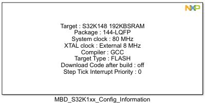
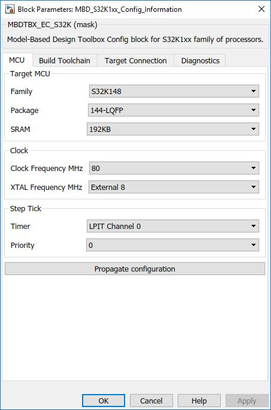
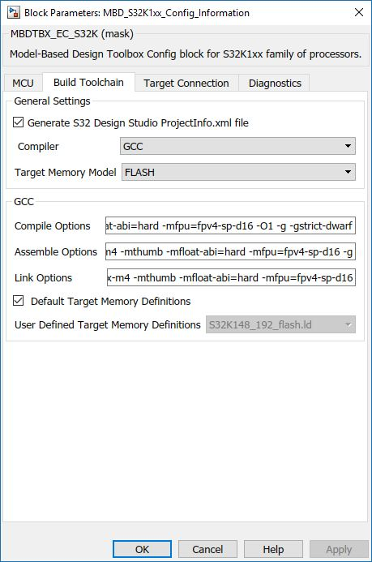
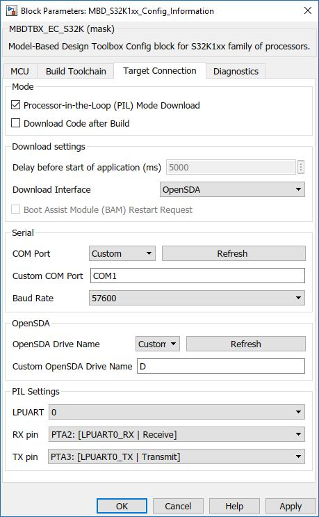
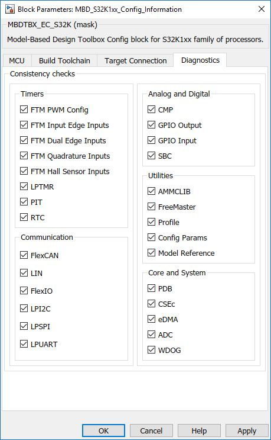

Target Configuration Block
The main functionality of the block is to configure the MCU target, build toolchain, connection and diagnostics.
Block Image
Inputs:
- None
Outputs:
- None
Parameters and Dialog Box
The block dialog consists of the following configuration tabs:
Target MCU
The MCU tab contains the following parameters:
Target MCU
- Family
- S32K116
- S32K118 S32K142
- S32K144
- S32K146
- S32K148
- 64LQFP
- 100LQFP
- 144LQFP
- 176LQFP
- 64KB
- 128KB
- 192KB
- 256KB
System Clock Frequency MHz
- Clock Frequency Value
- 40 MHz - Only for S32K11x
- 80 MHz - Only for S32K14x
- 112 MHz - Only for S32K14x
- External Crystal clock
- External 8 MHz - Default Exteranl Quartz on S32K14x EVB
- External 40 MHz - Default Exteranl Quartz on S32K11x EVB
Step tick
Here you can either select a timer to call functions on a defined step interval (set in MATLAB Solver - FixedStepDiscrete), either suppress that timer and call all your subsystems with another time/block of your choice.
- Timer
- LPIT Channel 0
- Suppress
- Priority level of System Tick interrupt (0 - 15)
Propagate configuration
Press this button to propagate the settings to all referenced models.
Build Toolchain
Here you can set the following parameters:
Generate S32 Design Studio ProjectInfo.xml file
This enables the generation of a S32 Design Studio project file, when building a model. This option is only available when GCC is selected compiler.
Compiler Selection
- IAR
- GCC
- GreenHills Multi
Target Memory Model
- FLASH
- SRAM
GCC/GHS/IAR Compile Options
Compile Options for compiler.
GCC/GHS/IAR Assemble Options
Default Assemble Options for compiler.
GCC/GHS/IAR Link Options
Default Link Options for compiler.
GCC/GHS/IAR Library Options
Default Library Options for the compiler.
GCC/GHS/IAR Default Target Memory Definitions
- On
- Off
GCC/GHS/IAR User Defined Target Memory Definitions
List of available .icf files in [compiler]_specific_files folder
PIL and Download Config
Here you can set the following parameters:
Processor-in-the-Loop (PIL) Mode Download
Enable if PIL simulation mode should be supported.
Download Code after Build
Enable if application code should be downloaded onto the target after build.
Delay before start application
Delay in milliseconds before application starts.
Download Interface
Selects Download method for application Serial (uses bootloader) or OpenSDA (no bootloader)
BAM Restart Request
If checked, Prompt Dialog should be shown before target reset.
COM Port
COM port for PIL and BootLoader communication (Click on Refresh to update your current possible connections).
Baud Rate
Available Baud rate selection for PIL and Bootloader communication.
OpenSDA Drive Name
Select the drive on which the EVB has mounted on. Click on Refresh button to show up current possible connections or select Custom and enter the drive letter which you want to use.
LPUART
Select which LPUART module to use.
RX pin
The list of available RX pins depends on the selected LPUART module.
TX pin
The list of available TX pins depends on the selected LPUART module.
Diagnostics
Here you can set the following parameters:
Enable/Disable Consistency Checks
Several checkboxes available to Enable/Disable consistency checks for specific modules/peripherics.
Block Dependency
- None
Block Miscellaneous Details:
- Required System Target File is set automatically by adding Target Configuration Block into the model. If no Target Configuration Block in the model then System Target File should be set manually.